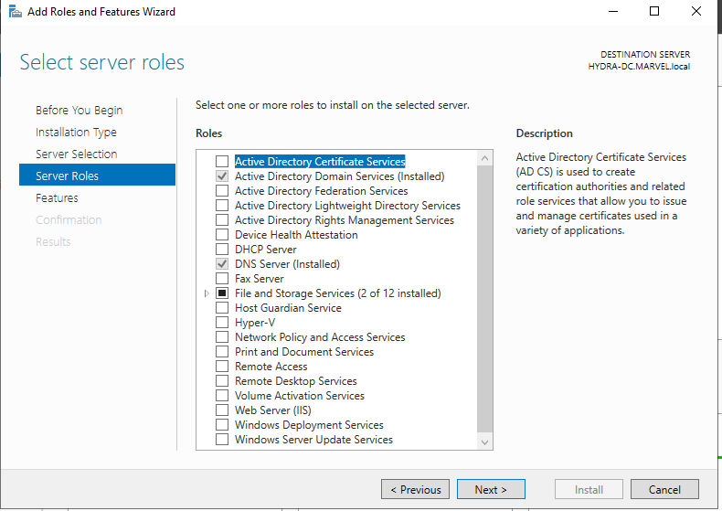

open windowws servwee
we arw goingn to install a cecate
go to manage-add roles and features

clicl on active directory certificate services
then just go to next next
and select restart if requited

thus go to configure ad certificate services on the


so we are setting up a certificate so that we can run ldap on a secure site
would use ldapsecure
could ve donw it with ldap too bt still ldappsecure is better